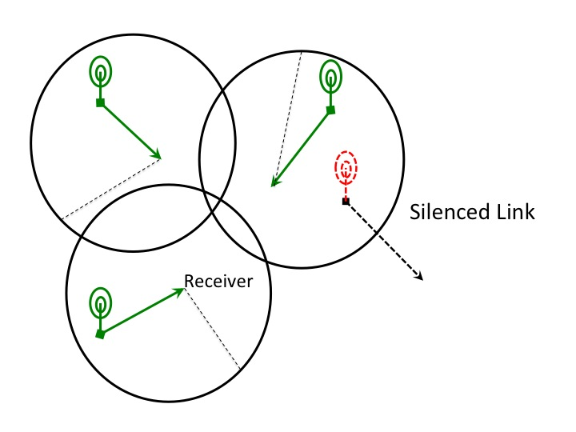
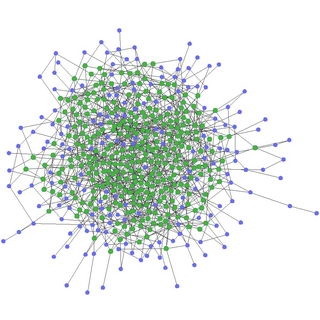
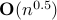
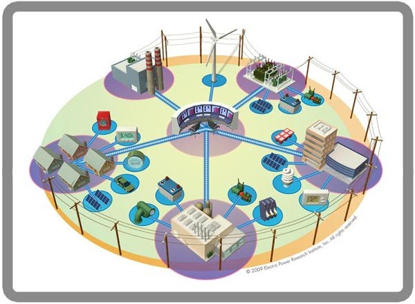

Abishek Sankararaman - Research
Distributed Scheduling in Dense Wireless Networks
Advisor Prof. François Baccelli
|  | The number of ad-hoc wireless devices and the amount of wireless data consumed is continually increasing. Today, an average American has about 2.7 wireless devices connected to the web at any point of time. With this increased hunger for wirelss data across multiple devices, the question of scheduling becomes quite crucial. In this project, we revisit the fundamental channel access problem in a distributed wireless setting. The ubiquitous IEEE 802.11 standards implemented today (CSMA Protocols) are based on Interference as Noise paradigm (See figure). They essentially block simultaneous nearby transmissions. Although this is inefficient, this is popular due to the ease and simplicity of distributed implementation. In this project, we propose and evaluate protocols more suited for a dense setting motivated by results in Network Information Theory. We also propose and evaluate simple implementation mechanisms that try to retain as much benefits of traditional 802.11 based CSMA protocols. On a more abstract level, the question of distributed scheduling of links can be thought of as a spatial packing problem where one is interested in putting as many items(a.k.a wireless links) in space as possible without having to compromise on link quality. We are currently exploring this angle of the scheduling problem. Related Publications |
Learning Sparse Graphs from Few Measurements
Advisor Prof. Radhakrishna Ganti
|  | This project was part of my Master's Thesis at IIT Madras. Network tomography (or topology discovery) is an inference task of discovering the internal network connections based on access to the end of the network. In mathematical terms, network tomography refers to graph reconstruction based on aggregate end-to-end measurements between a subset of nodes. This can be thought of as the problem of wanting to figure out the network connections of all the computers connected on the IIT Madras network for instance. One way to do that would be to call for volunteers which will be some of the computer stations connected on the network. These volunteers then ping each other through the network and look at the number of hops it takes for the pings to reach each other. Reliably reconstructing the network from these ping data is what is referred to as network tomography in this project. The major result from this project was that we were able to show existence of algorithms that would only require about  number of participants where The Thesis can be found here. |
 is the number of total nodes in the network as n grows large. In other words, we showed that for this problem, the necessary number of participants is also sufficient to reconstruct. However, we could only show existence of an algorithm but we have not yet come up with an algorithm that can achieve this bound. This is one of the future works to be done in this area.
is the number of total nodes in the network as n grows large. In other words, we showed that for this problem, the necessary number of participants is also sufficient to reconstruct. However, we could only show existence of an algorithm but we have not yet come up with an algorithm that can achieve this bound. This is one of the future works to be done in this area.Smart Grids - State Estimation and Congestion Control
Advisor Dr. Balakrishnan (Murali) Narayanaswamy
|  |
|
Related Publications
Congestion Control of Smart Distribution Grids using State Estimation co-authoured with B. Narayanaswamy in Proceedings of E6 Workshop, IEEE COMSNETS Jan 2013.
Event based Virtual MPSoC Debugging
Defined and implemented a generic debug and control interface for MPSoC (Multi Processor System on Chip) debugging on virtual embedded systems
Designed and developed a processor IP independent interface to facilitate non-intrusive access to simulated systems.
Implemented and tested the system on two virtual processors, ARM9 and Tensilica Xtensa.